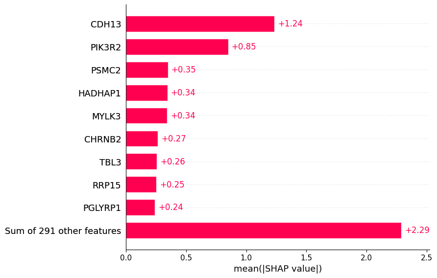

Identifying gene expression biomarkers associated with weight loss using Bayesian-optimized XGBoost
Published
November 21, 2025
Goal
The goal of this project is to find gene biomarker for weight loss response from a publicly available dataset. To this I trained a decision-tree method (XGBoost) using Bayesian optimization for tuning its hyperparameters. Finally I used theS HAP values to explain the results.
Dataset
I downloaded the Ornish dataset from the MEvA-X tool. This dataset is already normalized and contains microarry gene expression, with information of Age, Gender, COPD, Diabetes, and WeightLoss, making 13’520 features on 89 participants. WeightLoss is a binary variable: Responders for participants with a weight loss higher than 10% and Non_responders otherwise.
import matplotlib.pyplot as pltimport seaborn as snsplt.figure(figsize=(12, 6))# plot density for each samplefor i inrange(X.shape[0]): sns.kdeplot(X.iloc[i,:], bw_adjust=0.5, fill=True, alpha=0.5)plt.title('Density of Gene expression')plt.xlabel('Gene expression level')plt.ylabel('Density')plt.tight_layout()plt.show()
PCA on gene expression data showing the distribution of participants colored by response status along the first two principal components.
import numpy as npfrom sklearn.decomposition import PCAfrom sklearn.preprocessing import StandardScaler# standardize the featuresscaler = StandardScaler()X_scaled = scaler.fit_transform(X)# PCApca = PCA()X_pca = pca.fit_transform(X_scaled)# scatter plot of the first two principal componentsplt.figure(figsize=(10, 8))labels = Yinv_mapping = {v: k for k, v in mapping.items()}plt.scatter(X_pca[labels==0, 0], X_pca[labels==0, 1], color='steelblue', label=inv_mapping[0])plt.scatter(X_pca[labels==1, 0], X_pca[labels==1, 1], color='orange', label=inv_mapping[1])plt.legend()plt.xlabel('PC1 ({:.2f}%)'.format(pca.explained_variance_ratio_[0] *100))plt.ylabel('PC2 ({:.2f}%)'.format(pca.explained_variance_ratio_[1] *100))plt.show()
Quick and dirty approach
I built a ‘vanilla’ XGBoost model without exploring the hyperparameter space to see how a baseline model behaves. The workflow included:
feature selection using mutual information (MI) to identify the top 300 genes most correlated with weight loss
performance evaluation with AUROC and AUPRC
model interpretation with SHAP values
Note: I did not scale data because MI and tree-based methods (as XGBoost) are invariant to scale. Moreover, the dataset is already normalized.
Splitting the dataset in training and test set
from sklearn.model_selection import train_test_splitX_train, X_test, y_train, y_test = train_test_split(X, Y, test_size=0.3, random_state=0)
Feature selection by MI
from sklearn.feature_selection import SelectKBestfrom sklearn.feature_selection import mutual_info_classif# get top genesselector = SelectKBest(mutual_info_classif, k=300)selector.fit(X_train, y_train)# get top featuresfeature_index = selector.get_support(indices=True)all_features = X_train.columnsselected_features = all_features[feature_index]# build datasets with top featuresX_train_filtered = pd.DataFrame(selector.transform(X_train), columns=selected_features, index=X_train.index)X_test_filtered = pd.DataFrame(selector.transform(X_test), columns=selected_features, index=X_test.index)
The plot below shows the contribute of the top biomarkers to weight loss.
Each dot represents a participant, while the color indicates gene expression level. Darker blue indicates lower expression, while darker red indicates higher expression.
Positive SHAP values indicate a higher probability of a participant of being a responder (weight loss), while negative SHAP values indicate a higher probability of being a non-responder (no weight loss).
Looking at the plot, we can conclude for example that participants with low levels of CDH13 and high levels of PIK3R2 and PSMC2 are associated with weight loss.
Below we show the importance of the top biomarkers in predicting weight loss response.
shap.plots.bar(shap_values)

Tuning XGBoost hyperparameters
Starting from the ‘vanilla’ XGBoost model, I tuned the relevant hyperparameters using Bayesian optimization. To prevent data leakage, the supervised feature selection was performed within the cross-validation. Folds were stratified to balance participants labeled with the responder and non-responder class. As expected, the tuned XGBoost version outperformed the ‘vanilla’ baseline.
Most of the top biomarkers identified by the baseline and tuned models overlap (CDH13, HADHAP1, PIK3R2, RRP15, PSMC2, MYLK3), though their rankings differ (except for CDH13 which ranks first in both). However, the tuned model better clusters participants with high versus low gene expression, suggesting more robust predictions.
I also compared two tree-based approaches XGBoost and Random Forest. In this dataset, XGBoost outperformed Random Forest as it showed lower loss over trials.